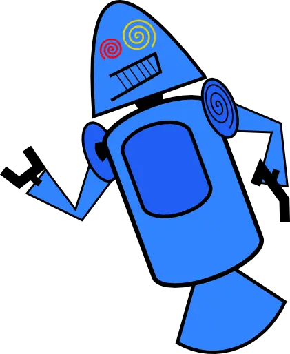
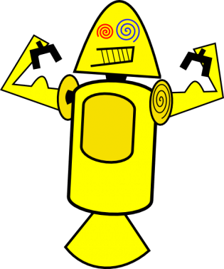
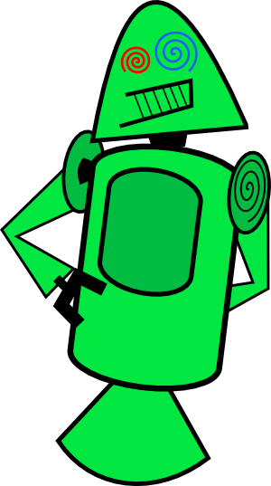
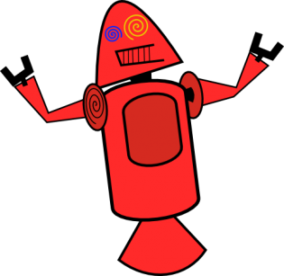

História do mascote do Android
O mascote do Android, chamado Bugdroid, é um robô verde com antenas. Ele representa a natureza aberta e amigável do sistema operacional Android. Desde 2007, Bugdroid se tornou um símbolo reconhecido globalmente. Vestindo trajes para refletir diferentes versões do Android, ele personifica a constante evolução da tecnologia. Bugdroid não é apenas um mascote, mas um ícone que inspira a comunidade Android a inovar e colaborar.
A primeira versão
O primeiro mascote do Android foi concebido em 2007 pela designer gráfica Irina Blok 🔗, que trabalhava na equipe de marketing da Google. Irina foi encarregada de criar um personagem amigável que representasse a plataforma Android.
   
Surge um novo mascote
Ela criou o icônico Bugdroid, um simpático robô verde com antenas. A escolha de um robô reflete a natureza tecnológica da plataforma Android, enquanto o tom verde é uma referência à cor associada ao sistema operacional. Bugdroid foi projetado para transmitir a ideia de abertura, flexibilidade e adaptabilidade, características fundamentais do Android.
Desde então, Bugdroid tornou-se o mascote oficial do Android e é amplamente reconhecido em todo o mundo. Sua presença em eventos, materiais de marketing e até mesmo em dispositivos Android contribuiu para sua popularidade duradoura, simbolizando a inovação e a comunidade vibrante por trás do sistema operacional móvel.